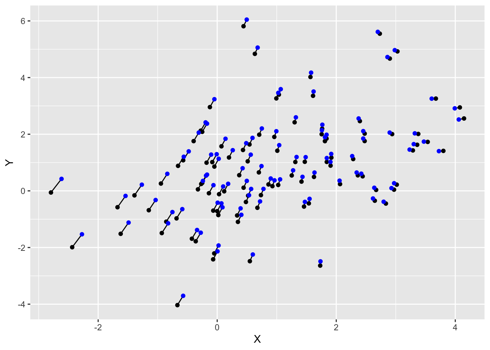

library(mvtnorm)
mean <- c(1, 1)
sigma <- matrix(c(2, 1, 1, 3), nrow = 2, byrow = TRUE)
samples <- rmvnorm(100, mean = mean, sigma = sigma)Appendix A — Datasets
A.1 Point clouds with specific mean and covariance
The rmvnorm command, part of the mvtnorm package, provides a way to sample points from a multivariate normal distribution with a specific population mean and standard deviation. For example, the code snippet below generates 100 sample points from a distribution with mean \(\mu\) and covariance matrix \(\Sigma\) given by
\[ \mu = \begin{bmatrix} 1 \\ 1 \end{bmatrix}, \quad \Sigma = \begin{bmatrix} 2 & 1 \\ 1 & 3 \end{bmatrix}. \tag{A.1}\]
The mean and sigma parameters are the population mean and covariance, and the sample mean and covariance will be slightly different:
bar_x <- colMeans(samples)
bar_x[1] 0.9661279 0.7986743sigma_x <- cov(samples)
sigma_x [,1] [,2]
[1,] 2.162411 1.201452
[2,] 1.201452 3.173997In some cases, we require a dataset whose sample mean and covariance are exactly equal to some given parameters. It turns out that we can achieve this by means of a judiciously chosen linear transformation. Assume that we have \(n\) datapoints \(x_i \in \mathbb{R}^p\), and let \(A\) be an arbitrary \(p \times p\) matrix and \(b \in \mathbb{R}^p\) a vector. The transformed data points \[ y_i = A x_i + b, \tag{A.2}\] have sample mean \(\overline{y}\) and covariance matrix \(\Sigma_y\) given \[ \overline{y} = A \overline{x} + b \quad \text{and} \quad \Sigma_y = A \Sigma_x A^T, \] where \(\overline{x}\) and \(\Sigma_x\) are the sample mean and covariance matrix of the \(x\) variables.
To make the sample mean equal to a given vector \(\mu\), and the sample covariance matrix equal to a given matrix \(\Sigma\), we have to solve the following equations for \(A\) and \(b\): \[ A \overline{x} + b = \mu \quad \text{and} \quad A \Sigma_x A^T = \Sigma. \] Let’s focus on the second equation first, since it only involves the matrix \(A\). Since the covariance matrices \(\Sigma\) and \(\Sigma_x\) are positive definite, it turns out that there exist unique upper-triangular matrices \(R\) and \(R_x\) such that \[ \Sigma_x = R_x^T R_x \quad \text{and} \quad \Sigma = R^T R. \] This is the so-called Cholesky decomposition; we don’t have to worry about the details here, since R can compute \(R\) and \(R_x\) for us. Using this decomposition, the equation for \(A\) can be written as \[ AR_x^T R_x A^T = (R_x A^T)^T R_x A^T = R^T R, \] so that it is sufficient to find a matrix \(A\) such that \(R_x A^T = R\). This we know how to do: we just multiply both sides from the left by \((R_x)^{-1}\) and take the transpose to find \[ A = (R_x^{-1}R)^T. \] With this expression for \(A\), we can find \(b\) by setting \[ b = \mu - (R_x^{-1}R)^T \overline{x}. \]
We can code up these equations in R as in the snippet below. This approach works well for data points in low dimensions. For higher-dimensional data it is recommended (for reasons of numerical efficiency and stability) to avoid computing the inverse \(R_x^{-1}\) directly. Instead, we can solve a system of linear equations that yield the transformed points \(y_i\) directly. We will not pursue this alternative any further.
add_to_rows <- function(X, b) {
t(apply(X, 1, function(row) row + b))
}
R <- chol(sigma)
R_x <- chol(cov(samples))
A <- t(solve(R_x) %*% R)
b <- mean - A %*% bar_x
samples_y <- samples %*% t(A)
samples_y <- add_to_rows(samples_y, b)The resulting datapoints have mean and covariance exactly as given by Equation A.1:
colMeans(samples_y)[1] 1 1cov(samples_y) [,1] [,2]
[1,] 2 1
[2,] 1 3Last, we can take a look at the relative location of the original and adjusted data points. We see that our procedure selectively moves points around to make the mean and covariance matrix equal to what we imposed on it.
Code
df <- cbind(
as_tibble(samples, .name_repair = "minimal"),
as_tibble(samples_y, .name_repair = "minimal")
)
colnames(df) <- c("x1", "y1", "x2", "y2")
ggplot(df) +
geom_segment(aes(x = x1, y = y1, xend = x2, yend = y2)) +
geom_point(aes(x1, y1)) +
geom_point(aes(x2, y2), color = "blue") +
xlab("X") + ylab("Y")
These coures notes are made available under the Creative Commons BY-NC-SA 4.0 license.